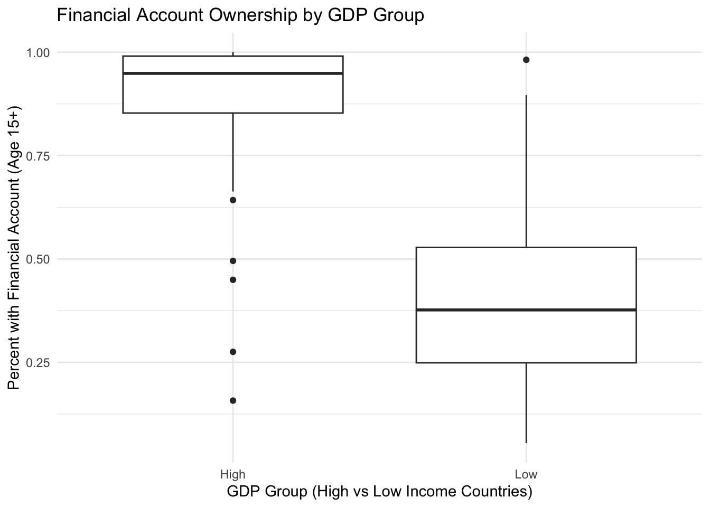

Raw data source for financial institution accessRaw data source for GDP per Capita I got the data that understood GDP per Capita for the 120 countries I analyzed from worldometer and combined it with the financial data I obtained from the world bank. I cleaned up the data getting rid of countries for which we had incomplete data, as well as narrowing down the many variables the orgignal data had to just 5 variables being the ones listed below.
Author
Nathan Dhanani
Published
April 2, 2025
Context of the problem:
The point of this analysis is to explore how access to financial institutions and services such as having a checking account impacts a nations GDP and to explore the relationship between the two factors. We are exploring GDP per Capita for 120 nations in USD. We are measuring how GDP per Capita is affected by the percent of the population 15+ and older who have access to a financial institution account. Among the data we also have other variables to measure access to financial institutions such as:
Saved at a financial institution (% age 15+)
Borrowed from a formal financial institution (% age 15+)
Account, female (% age 15+)
Account, male (% age 15+)
Owns a credit card (% age 15+)
I split countries into two groups based on the median GDP per Capita:
High GDP group: Countries above the median
Low GDP group: Countries below the median
Why this is interesting to analyze:
Understanding how economic development correlates with financial inclusion is essential for policy and development strategy. If we notice countries with greater access to financial institutions have a larger GDP per Capita than maybe we can identify financial institutions as a potential driver in generating wealth for a country. Understanding this could help addresing policy going forward in low income countries. If these countries implement policies that expand access to financial institutions it could help increase their GDP per Capita and improve a nations wealth which would also improve standard of living, overall happiness, and quality of life.
Research question:
Does greater access to financial institutions correlate with higher national wealth, as measured by GDP per Capita?
Null hypothesis:
There is no difference in GDP per Capita between countries with higher and lower access to financial institutions.
Alternate Hypothesis:
Countries with greater access to financial institutions have a higher GDP per Capita than those with lower access.
Plan:
To explore the relationship between a country’s wealth and financial access, I plan to compare the percentage of adults with bank accounts across high- and low-GDP countries. I plan to categorize countries into two groups based on the median GDP per Capita. To determine whether any observed difference in financial access was statistically significant, I plan to conduct a permutation test simulating the null hypothesis of no association. By repeatedly shuffling account access values and calculating the difference between groups, I aim to build a reference distribution to compare against the observed difference.
In my analysis I aimed to investigates whether countries with higher GDP per Capita also have greater access to financial institutions. To do this, I began by importing and cleaning the dataset, converting relevant financial indicators to numeric form. I then split countries into “High” and “Low” GDP groups based on the median GDP per Capita. The main variable of interest is the percentage of adults aged 15+ with a bank account. To test whether the observed difference in account access between high- and low-GDP countries could be due to chance, I implemented a permutation test. This involved randomly shuffling the account access values across countries 1,000 times to simulate the distribution of differences we would expect under the null hypothesis of no relationship. For each iteration, I calculated the observed and permuted differences in both means and medians between the two groups. The results allow us to compare the actual observed difference to what we’d expect under random assignment, helping determine whether the relationship between GDP and financial access is statistically meaningful.
library(ggplot2)GDP_analysis |>ggplot(aes(x = GDP_Group, y = Account_15plus, fill = GDP_Group)) +geom_boxplot(alpha =0.7) +labs(title ="Access to Financial Accounts by GDP Group",x ="GDP Group",y ="% of Population (15+) with an Account" ) +theme_minimal() +scale_fill_manual(values =c("Low"="#FF9999", "High"="#66CC99"))

This plot shows a comparison of access to financial accounts between countries with high and low GDP per Capita. Each box represents the distribution of the percentage of adults aged 15 and older who have an account at a financial institution within each GDP group. It shows the lower 25th percent quartile represented by the bottom of the box. This middle of the box represents the 50th percent quartile. The top of the box represents the 75th percent quartile. It also shows the outliers and data not in this distribution by the lines and data points shown outside of the box. From the visualization, we see that countries with higher GDP per Capita generally have greater access to financial accounts as we see the box is a lot higher. This means that on average those in higher GDP per Capita countries have a greater percent of the population with access to financial accounts. We see both the median and overall distribution higher than in the low-GDP group. This visual difference supports the idea that national wealth may be associated with financial inclusion.